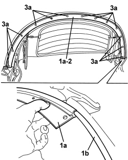

7030H32 HOOD REAR CHANNEL - R.R.
- Path
- Procedures > 70 FITTINGS > 7030 SUN ROOF/GLASS PANEL > 7030H AUTOMATICALLY OPERATED HOOD > 7030H32 HOOD REAR CHANNEL - R.R.
- Kind
- repair procedure (removal / refitting; the operation number is the code)
- Applies to
- engines: 2.2 JTS, 3.2 JTS; all production periods
- Interactive page
- https://sloeber94.github.io/elrnDB-aBrrSpdr/en/#/946003669
Applies to: engines: 2.2 JTS, 3.2 JTS; all production periods
 Removing
Removing
 Refitting
Refitting- Cover vehicle bodywork and upholstery with protective cloth.
Op. 7030H39 HOOD REAR SEAL - R.R.
1. Drill out rivets (1a) securing rear drip channel (1b) (recover removed rivets).
2. Remove rear drip channel (1b) from the main hoop.
3. With the help of a second mechanic, withdraw rear drip channel (1b) from hood canvas lining strip (3a).
Applies to: engines: 2.2 JTS, 3.2 JTS; all production periods
Refitting
Removing- Check that the rear drip channel is not damaged. Restore surface protection to metal parts, which may have been damaged when the rivets were removed, etc.
1. With the help of a second mechanic, slide rear guide channel (1a) into hood canvas lining strip (1b).
2. Position rear drip channel (1a) on the main hoop.
3. Apply rivets (3a) securing rear drip channel (1a) to the main hoop.

Applies to: engines: 2.2 JTS, 3.2 JTS; all production periods
Op. 7030H39 HOOD REAR SEAL - R.R.
- Check that the hood is working correctly.